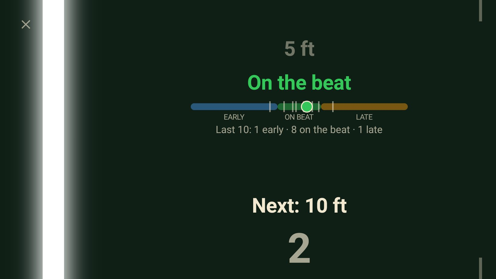
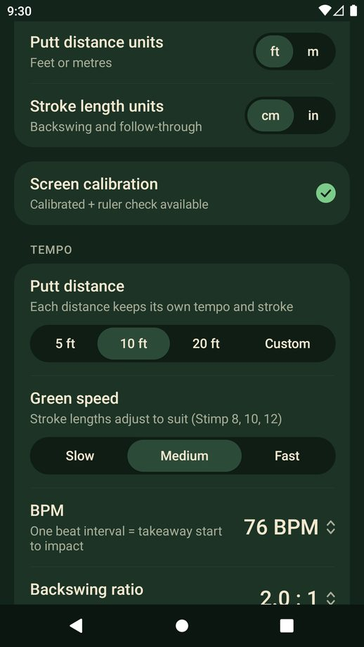
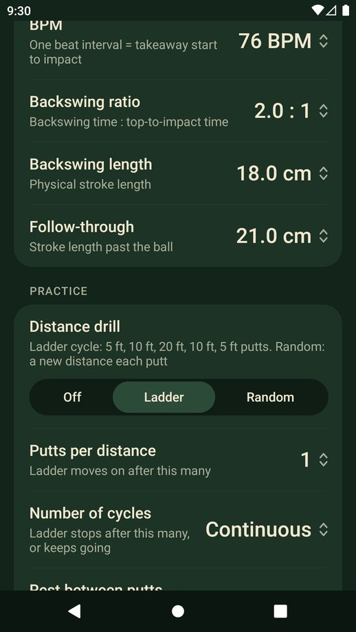
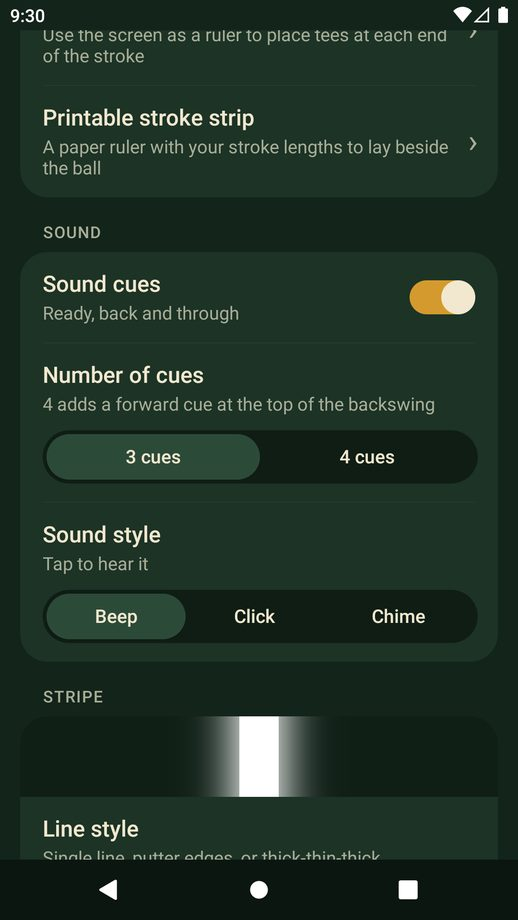
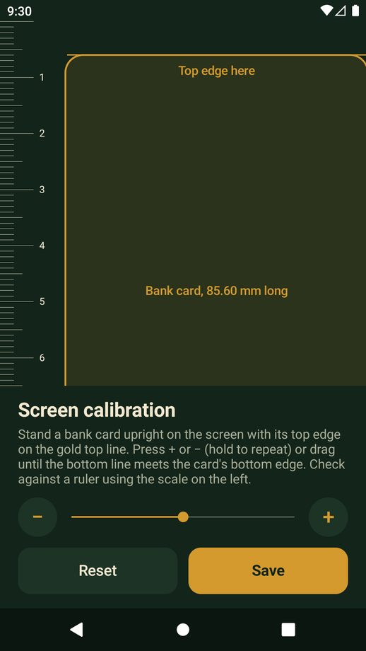

Lay your phone beside your putter and follow the line. PuttPace trains your putting tempo and stroke length, wherever you practise.
Try it free for 3 days. No account, no ads, no subscription.
Good pace comes from the same beat on every putt. Only the length of the stroke changes.
Pick 5, 10 or 20 feet, or any custom distance, then choose your green speed.
Flat beside the ball, screen up, along your target line.
It takes your putter back and through on the beat. Match it with the putter head, then go again.
On the putting green, or on the carpet at home.
Each distance has its own backswing and follow-through. Slow, medium or fast greens change the length, never the tempo.
Your microphone hears the strike and shows if you were early, late or on the beat. The sound is analysed on your phone and never recorded.
Ladder or random distances, with the next putt called out, a countdown and your progress through the session.
Keep your eyes on the ball. Beep, click or chime cues are matched to the line.
Calibrate your screen with a bank card, so a stroke length on the phone is that length in real life.
Stroke longer than your screen? Mark it with tees using the phone as a ruler, or print a free stroke strip.
Your settings stay on your phone.





Free for 3 days, on iPhone and Android.
Last updated: 29 October 2026
PuttPace is a putting tempo trainer published by Sunday Studio Apps. This policy explains what information the app uses and why.
Your settings (tempo, stroke length, line style, sounds, screen calibration and presets) are stored only on your device. PuttPace has no accounts, and we do not receive or store this information.
If you switch on Impact timing, PuttPace uses your phone's microphone while the trainer is open to hear your putter strike the ball and show whether you were early or late. The sound is analysed on your device as it happens. It is never recorded, stored or sent anywhere, and the microphone is not used at any other time. You can switch the feature off, or remove the permission in your phone's settings, at any time.
PuttPace 1.1 and later shows no ads and contains no advertising code.
Earlier test versions (1.0.x) showed banner ads provided by Google AdMob. In those versions, to show and measure ads and to prevent fraud, Google may collect and process your device's advertising ID, IP address (from which an approximate location can be derived), device and app information, and how you interact with ads, as described at policies.google.com/technologies/partner-sites. Updating to the latest version removes this. You can also reset or delete your advertising ID in your device's Google settings.
PuttPace has a short free trial. The date your trial started is stored only on your device, with your settings. If you buy Unlock PuttPace, the payment is handled by Google Play. We receive confirmation that the purchase was made, but never your payment details.
PuttPace is not directed at children under 13, and we do not knowingly collect information from them.
If this policy changes, the updated version will be posted on this page with a new date.
Questions about this policy: sundaystudioapps@gmail.com